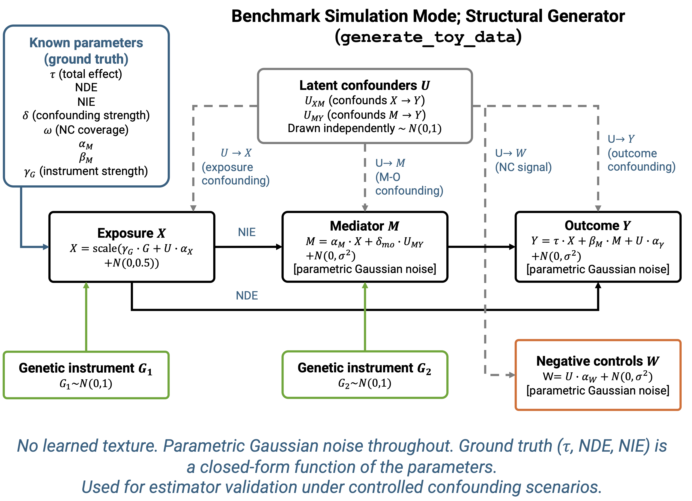
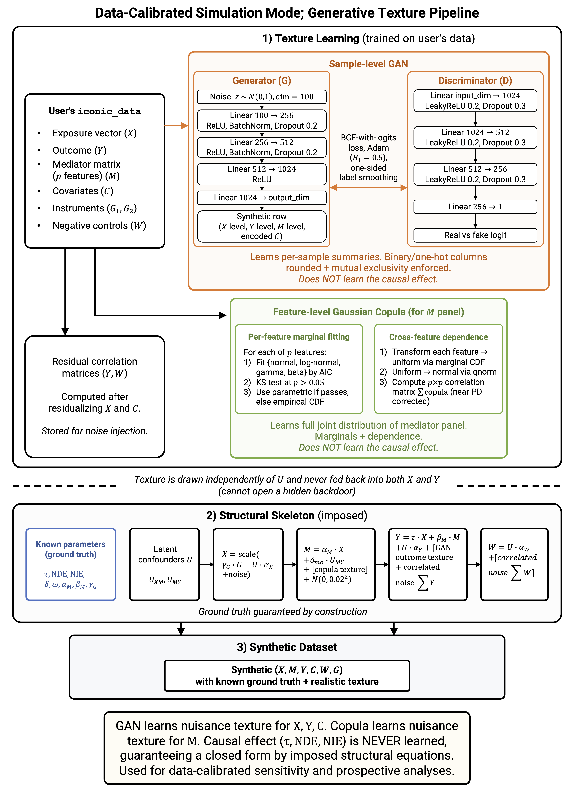

About the Package
The R package iconic provides a model selection workflow for causal inference with genetic instruments and negative controls in observational omics data. It fits eight estimators of the natural direct and indirect effects (NDE / NIE), diagnoses which are valid for the user’s data, stress-tests them against confounding and pleiotropy violations, and recommends the one most likely to be unbiased.
The motivating application is estimating the causal effect of an exposure (e.g. gestational diabetes mellitus) on a panel of molecular outcomes (e.g. placental transcriptome), but the package is applicable to any observational study with a genetic instrument, negative controls, and a mediator and/or outcome panel. A hybrid generative texture model (a torch GAN for sample-level structure and a Gaussian copula for the mediator panel) lets the sensitivity analysis mirror the marginal and joint structure of the user’s cohort. Time-to-event outcomes are supported on the Cox log-hazard-ratio and restricted-mean-survival-time scales.
See the package vignettes for a quickstart guide, an overview of each functional area, and worked examples.
We welcome your feedback and questions:
- Email seantbresnahan3@gmail.com for general questions
Estimators
iconic implements eight estimators of the total effect and its decomposition into the natural direct and indirect effects. Each estimator requires different identifying assumptions; iconic_diagnose() checks which are met for your data.
Total-effect estimators
- UNADJ (confounded reference): ordinary regression of the outcome on the exposure and covariates. No identifying assumption; biased by unmeasured confounding. Serves as the bias reference.
- DIRECT: regression of the outcome on the exposure, instrument, negative controls, and covariates. Uses all observables but does not remove unmeasured confounding; structurally biased.
- COCA (Control Outcome Calibration Approach): regresses the negative controls on the outcome and exposure, then recovers the effect as the ratio of the two coefficients. Efficient when the negative controls are strong proxies of the confounder; unstable when the outcome coefficient is near zero. Incompatible with survival outcomes.
- IV2SLS (two-stage least squares): instruments the exposure with the genetic instrument in the first stage, then regresses the outcome on the fitted exposure. Requires a valid instrument (independent of the confounder, first-stage F-statistic at least 10).
- PGC (proximal g-computation): three-stage estimator that builds a bridge proxy from the negative controls and includes it in the outcome regression. Requires negative-control completeness (enough valid controls to cover the latent confounders).
Mediation-specific estimators
These estimators decompose the total effect into the NDE (direct path) and NIE (indirect path through the mediator) and require either a mediator instrument or path-specific negative controls.
- IV2SLS2 (two-stage MR): three sequential two-stage least squares stages instrumenting both the exposure (with the exposure instrument) and the mediator (with the mediator instrument). Requires both instruments valid with first-stage F-statistic at least 10.
- PGC2 (two-stage proximal mediation): builds path-specific bridge proxies from path-specific negative controls — one for the exposure-mediator confounder and one for the mediator-outcome confounder. Requires completeness at both stages.
- PGC2Gm (negative-control-augmented): combines the first bridge with a mediator-instrumented mediator. Requires both path-specific negative controls and a mediator instrument; residual bias from a confounder-correlated mediator instrument is smaller than IV2SLS2 but nonzero.
Supported data types and functionalities
| UNADJ | DIRECT | COCA | IV2SLS | PGC | IV2SLS2 | PGC2 | PGC2Gm | |
|---|---|---|---|---|---|---|---|---|
| Continuous outcome | X | X | X | X | X | X | X | X |
| Survival outcome | X | X | X | X | X | X | X | |
| Total effect | X | X | X | X | X | X | X | X |
| Mediation (NDE + NIE) | X | X | X | X | X | X | X | X |
| Requires exposure instrument | X | X | ||||||
| Requires mediator instrument | X | X | ||||||
| Requires negative controls | X | X | X | X | X | |||
| Requires completeness | X | X | X |
Benchmark simulation mode
generate_toy_data() implements a structural data-generating process with parametric Gaussian noise and no learned texture. The ground truth (NDE, NIE, confounding strength, instrument strength, NC coverage) is a closed-form function of the parameters, making it suitable for estimator validation under controlled confounding scenarios.

Benchmark simulation mode: the structural synthetic-data generator (generate_toy_data). Two latent confounders are drawn independently — one opening the backdoor path from exposure to mediator, the other opening the backdoor path from mediator to outcome. The exposure, mediator, and outcome are generated from the structural causal model with parametric Gaussian noise at every stage. Genetic instruments for the exposure and mediator are drawn from a standard normal, and the path-specific negative controls are generated as coverage-weighted functions of the confounders plus noise. All ground-truth quantities are fixed, tunable parameters.
Generative texture pipeline
For sensitivity and prospective analyses, ICONIC trains a hybrid generative texture model on the user’s own data so that the synthetic data mirror the marginal and joint structure of the user’s cohort. The model combines a sample-level GAN (for mixed continuous and categorical covariate structure) with a feature-level Gaussian copula (for the mediator panel’s marginals and cross-feature dependence). Neither component learns the causal effect; the ground truth is imposed by the structural skeleton and guaranteed by construction.

Data-calibrated simulation mode: the hybrid GAN-plus-copula generative texture pipeline. (1) Texture learning: a sample-level GAN and a feature-level Gaussian copula are trained independently on the user’s data. (2) Structural skeleton: the learned texture is injected into the structural causal model, drawn independently of the latent confounders. (3) Synthetic dataset: the result is a synthetic dataset with realistic data texture and known ground truth.
Installation
iconic is being submitted to Bioconductor. Once accepted, install the release with:
# install.packages("BiocManager")
BiocManager::install("iconic")The development version is available from GitHub:
# install.packages("remotes")
remotes::install_github("sbresnahan/iconic")
# The generative texture model (GAN) requires torch:
install.packages("torch")Quick start
library(iconic)
set.seed(1)
# Simulated mediation panel: exposure X, mediator M, outcome Y,
# genetic instrument G, negative controls W.
dat <- generate_toy_data(n = 200, n_features = 10, seed = 1)
idat <- iconic_data(
X = dat$X, Y = dat$Y, M = dat$M,
G = dat$G, W = dat$W, covariates = dat$synthetic_data
)
# 1. Diagnose which estimators are eligible.
diag <- iconic_diagnose(idat)
# 2. Estimate NDE/NIE with all eligible estimators.
est <- iconic_estimate(idat)
# 3. Train a texture model once and attach it (reused downstream).
input <- load_real_input_data(
X_matrix = matrix(dat$X, nrow = 1), Y_matrix = t(dat$Y),
M_matrix = t(dat$M), W_matrix = t(dat$W),
covariates_df = dat$synthetic_data
)
idat$trained_gan <- train_gan_on_real_data(
input$gan_training_data,
feature_correlations = input$feature_correlations,
feature_texture = input$feature_texture,
epochs = 100, seed = 1
)
# 4. Stress-test robustness (reuses the attached GAN).
sens <- iconic_sensitivity(idat, confounding = "inferred")
# 5. Recommend a single estimator.
rec <- iconic_recommend(idat, diag, est, sens)
# 6. Prospect for future studies (reuses the attached GAN).
pros <- iconic_prospect(idat, confounding = "inferred")Key functions
| Function | Purpose |
|---|---|
iconic_data() |
Standardize exposure, outcome, mediator, instruments, and negative controls into one object. |
iconic_diagnose() |
Report instrument strength, negative-control validity (A1, A2, A2’), completeness, and estimator eligibility. |
iconic_estimate() |
Fit all eligible estimators; return per-feature NDE, NIE, SE, p-value. |
train_gan_on_real_data() |
Train a hybrid GAN + copula texture model from your data. |
iconic_sensitivity() |
Sweep instrument exogeneity; report bias degradation and tipping points. |
infer_confounding() |
Estimate confounding strength, NC coverage, and latent confounder count from the data. |
iconic_recommend() |
Combine eligibility, estimates, and robustness into a ranked recommendation. |
iconic_prospect() |
Sweep instrument strength to plan future studies. |
generate_toy_data() |
Simulate a mediation panel with known ground truth. |
Vignettes
-
ICONIC Walkthrough:
vignette("iconic-walkthrough")— the full model-selection workflow end to end. -
Building Instruments and Negative Controls:
vignette("iconic-instruments")— constructing exposure instruments (GWAS QC, LDpred2, PGS panels), mediator instruments (cis-eQTLs, elastic-net prediction), and negative-control panels, plus SummarizedExperiment interop. -
Diagnosing Estimator Eligibility:
vignette("iconic-diagnose")— instrument strength, negative-control validity screens, completeness, and the eligibility table. -
Sensitivity Analysis and Confounding Inference:
vignette("iconic-sensitivity")— sweeping instrument exogeneity, tipping points, and inferring confounding parameters from data. -
The Generative Texture Model:
vignette("iconic-texture-model")— the hybrid GAN + copula architecture, training, and when to use each simulation mode. -
Survival Outcomes:
vignette("iconic-survival")— Cox log-HR and RMST effect scales, COCA incompatibility, and the 2SPS architecture.